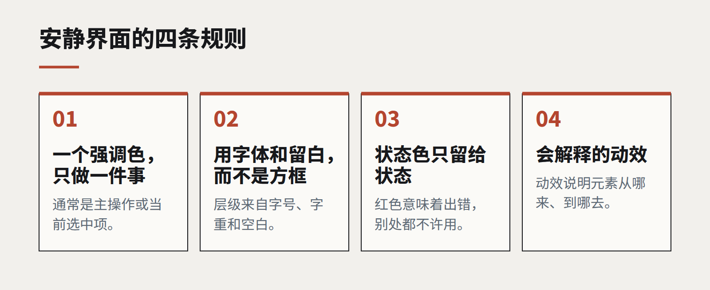

安静的界面
渐变、毛玻璃和弹跳动画已经风光了十年。2026 年最经得起时间的界面，是那些懂得让路的界面——而克制，比装饰更难设计。

看看那些人们一用就是好几年的产品，会发现一个规律：它们的界面很平静。颜色很少，字体一两种，动效只出现在能解释点什么的地方。它们在截图里很少显得惊艳，却在第一百天比第一天更好用。
我们开始把这叫做“安静的界面”，它也成了我们大多数产品工作的默认方向。不是因为它时髦——虽然它确实时髦——而是因为它能扛住真实软件所处的环境：长时间使用、密集的数据、疲惫的用户，以及源源不断、每个都想被看见的新功能。
克制是一套体系，不是一种风格
安静的界面不是空的界面，而是一个每个视觉元素都必须证明自己存在价值、强调的“预算”被有意识地花出去的界面。
落到实处，就是几条硬规则：
- 一个强调色，只做一件事。 通常是主操作或当前选中项。什么都高亮，就等于什么都没高亮。
- 用字体和留白建立层级，而不是用方框。 字号、字重和空白分隔内容，比边框和卡片更干净。每去掉一个容器，就少一样需要对齐的东西。
- 状态色只留给状态。 红色意味着出了问题。如果红色同时是品牌色，界面就少了一个词。
- 会解释的动效。 一个从来处滑出的面板，教会用户下次去哪里找它；一个弹跳的按钮什么也没教。

为什么现在更重要
过去两年，有两件事让克制变得更有价值。
第一是 AI 功能。助手、建议、生成内容正在进入每一个产品，而它们往往带着闪光、渐变和一种新颜色宣告自己的到来。一个本来就吵闹的界面，已经没有地方安放它们；一个安静的界面，可以吸收新能力而不改变整个屏幕的性格。
第二是密度。企业软件被要求在同样大小的屏幕上展示更多——更多数据、更多上下文、更多操作。想装下更多，唯一的办法就是去掉那些从来不承载信息的东西。
难点在哪里
安静的界面比吵闹的界面更难设计，也更难在评审中辩护。装饰过的屏幕很容易被称赞，克制的屏幕则容易招来一句“有点素”。对策是在使用中评审界面，而不是孤立地看：用真实数据、在任务的末尾、放在用户实际同时打开的另外三个窗口旁边。
它还需要长期的纪律。克制会被一个又一个合理的例外慢慢侵蚀——这里一个徽标，那里一条横幅。我们把规则写进设计系统，并据此评审每一个新模式，这样第三年发布的产品，和第一年一样平静。
目标不是为极简而极简，而是让界面在终于有东西需要引起注意时，人们真的会注意到。